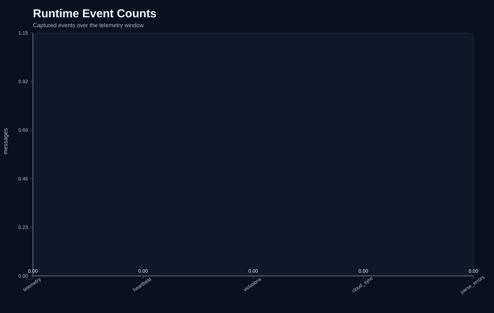
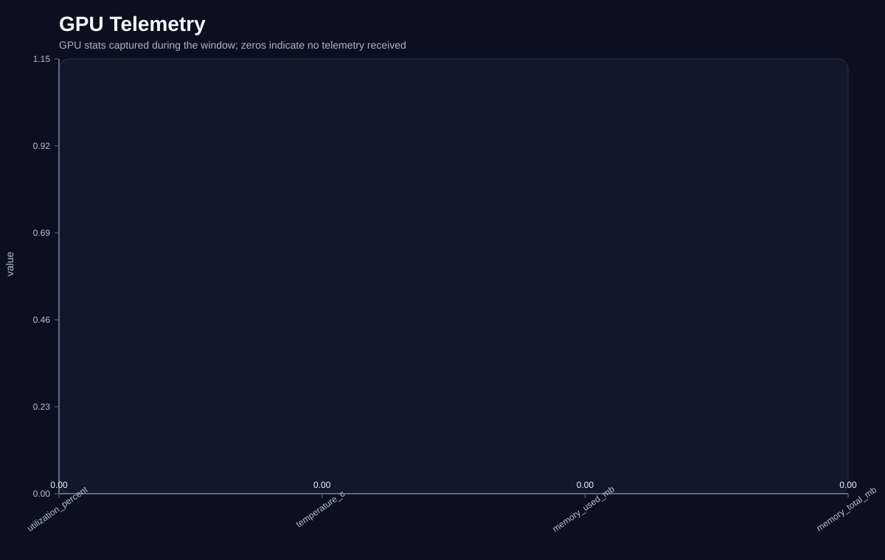
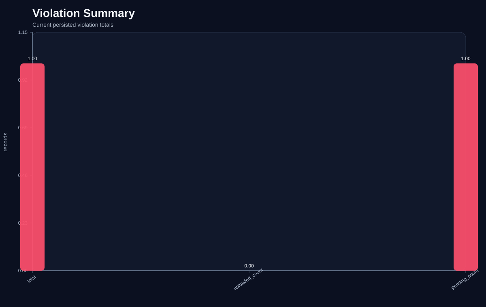
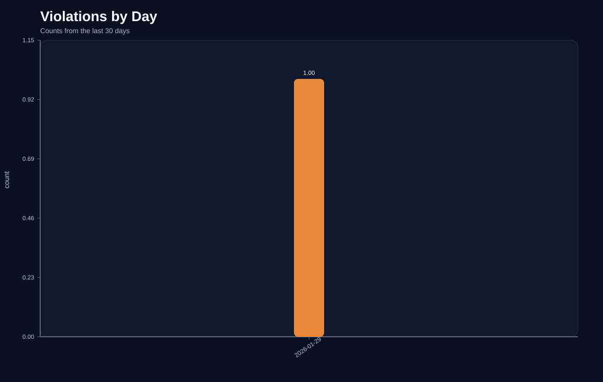
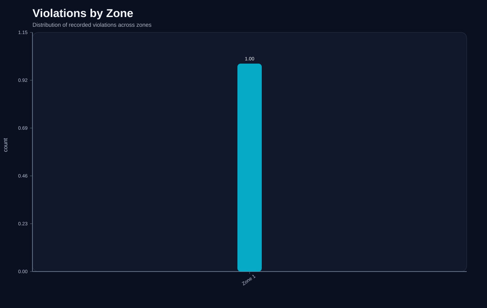
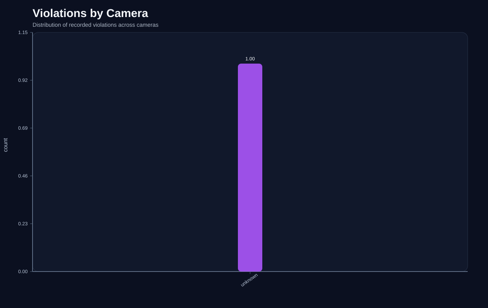
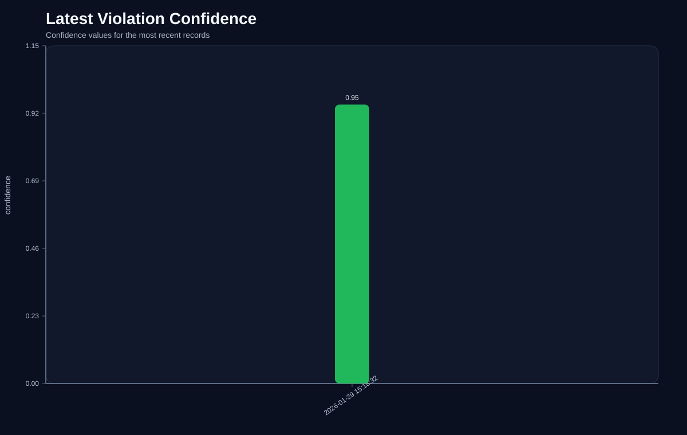

Project Graph Report
Generated from the current repository snapshots and any training artifacts you provided.
Notes
- No confusion matrix input was provided. Supply a JSON or CSV matrix file to generate that graph.
Runtime Event Counts

Runtime Gpu

Db Violation Summary

Db Violations By Day

Db Violations By Zone

Db Violations By Camera

Db Confidence Latest
